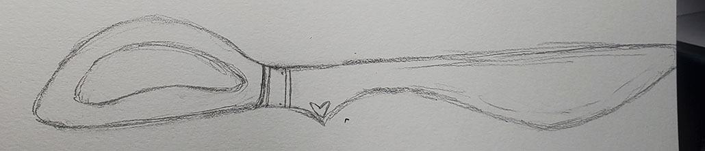

19 year old, Alixe Kingsley, born to Alison Kingsley and [REDACTED]. A rough life leads him down the path of greatness when an unsuccessful, and accidental, attempt at suicide pulls his conscious mind and soul into "Underlun", a world parallel to his own full of magical creatures, broken apart timelines, and an evil much greater than he'd ever imagined to face. While his life in what he could claim to be the 'Real World' is rough, Alixe will find himself traveling through Underlun's difficult terrain, accompanied by equally difficult party members, to stop at nothing toget back home. If he can even call it that...
"Fowards it is then."
"You're an absolute idiot, you know?"
"I don't need to stand here, and get bullied by some--some...overgrown, House-Cat!!"